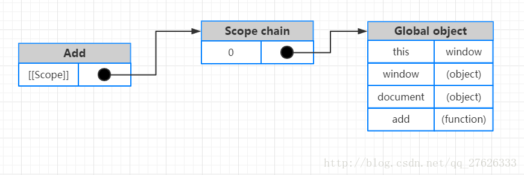
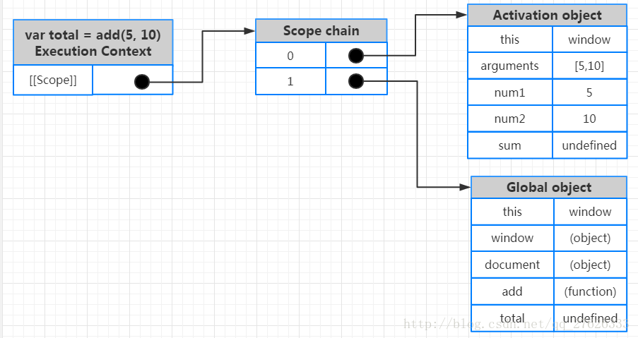
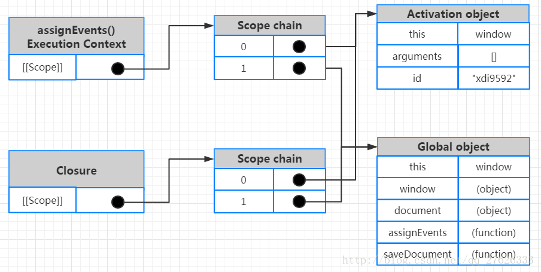
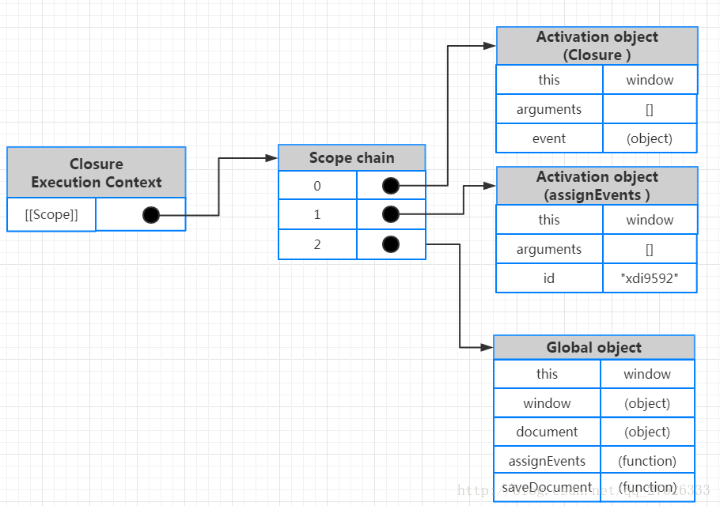

js 作用域链和闭包
1.执行环境(execution context)
执行环境
execution context和环境context不一样, 后面有介绍
执行环境定义了变量和函数有权访问的其他数据，决定了他们各自的行为。每个执行环境都有与之对应的变量对象（variable object）
变量对象就是执行环境中定义的变量和函数，活动对象是函数执行的时候被创建的，是属于某个函数的
保存着该环境中定义的所有变量和函数。我们无法通过代码来访问变量对象，但是解析器在处理数据时会在后台使用到它。
执行环境有全局执行环境（也称全局环境）和函数执行环境之分。执行环境如其名是在运行和执行代码的时候才存在的，所以我们运行浏览器的时候会创建全局的执行环境，在调用函数时，会创建函数执行环境。
1.1 全局执行环境
全局执行环境是最外围的一个执行环境，在 web 浏览器中，我们可以认为他是window 对象，因此所有的全局变量和函数都是作为window对象的属性和方法创建的。代码载入浏览器时，全局环境被创建，关闭网页或者关闭浏览时全局环境被销毁。
但看 JavaScript 核心概念之作用域和闭包 666 这个链接的图, global 的变量和 window 是单独的, 这里谁对呢>
1.2 函数执行环境
每个函数都有自己的执行环境，当执行流进入一个函数时，函数的环境就被推入一个环境栈中，当函数执行完毕后，栈将其环境弹出，把控制权返回给之前的执行环境。
2 作用域、作用域链
2.1 作用域(Scope)
作用域概念是理解JavaScript的关键所在，不仅仅从性能角度，还包括从功能角度。作用域就是变量和函数的可访问范围，控制着变量和函数的可见性与生命周期，换句话说，作用域决定了代码区块中变量和其他资源的可见性。在JavaScript中变量的作用域有全局作用域和局部作用域。JavaScript采用词法作用域(lexical scoping)，也就是静态作用域。
在下面的图中,
AO就是一个作用域,Global object也是一个作用域scope, 他们串一起就是scope chain咯
2.1 全局作用域（globe scope）和局部作用域（local scope）和块级作用域
在ECMAScript 5（包括 ECMAScript 5）之前的版本中，作用域只有全局作用域和局部作用域，不存在块级作用域；ECMAScript 6引入了let和const关键字，利用let和const可以形成块级作用域。(和 c go 那样的在{}里面表示块,不需要结合if for一起用才能形成块)
1、全局作用域:
在代码中任何地方都能访问到的对象拥有全局作用域。全局作用域的变量是全局对象的属性，不论在什么函数中都可以直接访问，而不需要通过全局对象，但加上全局对象，可以提供搜索效率。
a、没有用 var 声明的变量（除去函数的参数）都具有全局作用域，成为全局变量，所以声明局部变量必须要用 var。
b、window的所有属性都具有全局作用域
c、最外层函数体外声明的变量也具有全局作用域
2、局部作用域
局部变量的优先级高于全局变量。
a、函数体内用 var 声明的变量具有局部作用域，成为局部变量
b、函数的参数也具有局部作用域
1 | var a=3; // a全局变量 |
3、块级作用域:
使用 let 和 const 关键字声明的变量，会在形成块级作用域。常见的是在if和for的{}语句块里面用, 可以单独使用{}作为块作用域哦
1 | if (true) { |
上下文(context)不是执行上下文(execution scope)
许多开发人员经常混淆作用域(scope)和上下文(context)，很多误解为它们是相同的概念。但事实并非如此。作用域(scope)我们上面已经讨论过了，而上下文(context)是用来指定代码某些特定部分中this的值。
作用域(scope) 是指变量的可访问性，上下文(context)是指this在同一作用域内的值。
我们也可以使用call()、apply()、bind()、箭头函数等改变上下文。
在浏览器中在全局作用域(scope)中上下文中始终是Window对象。在 Node.js 中在全局作用域(scope)中上下文中始终是Global 对象。
1 | var name = "windowsName"; |
上下文始终坚持一个原理：this 永远指向最后调用它的那个对象参考javascript中this指向由函数调用方式决定，上例中调用a函数的是window，所以 a 函数中的this指向window对象。关于this以及改变this的指向，可以参考this、apply、call、bind
2.2 作用域链（scope chain）
JavaScript 中每个函数都都表示为一个函数对象（函数实例），函数对象有一个仅供 JavaScript 引擎使用的[[scope]] 属性。通过语法分析和预解析，将[[scope]] 属性指向函数定义时作用域中的所有对象集合。这个集合被称为函数的作用域链（scope chain），包含函数定义时作用域中所有可访问的数据。
1 | function add(num1, num2) { |
当定义 add 函数后，其作用域链就创建了。函数所在的全局作用域的全局对象被放置到 add 函数作用域链（[[scope]] 属性）中。我们可以从下图中看到作用域链的第一个对象保存的是全局对象，全局对象中保存了诸如 this , window , document 以及全局对象中的 add 函数，也就是他自己。这也就是我们可以在全局作用域下的函数中访问 window(this)，访问全局变量，访问函数自身的原因。全局上下文中的变量对象(Variable object，VO)就是全局对象。

全局作用域和局部作用域中变量的访问权限，其实是由作用域链决定的。
每次进入一个新的执行环境(这里就表示程序执行起来了)，都会创建一个用于搜索变量和函数的作用域链。作用域链是函数被创建的作用域中对象的集合。作用域链可以保证对执行环境有权访问的所有变量和函数的有序访问。
作用域链的最前端始终是当前执行的代码所在环境的变量对象（如果该环境是函数，则将其活动对象作为变量对象），下一个变量对象来自包含环境（包含当前还行环境的环境），下一个变量对象来自包含环境的包含环境，依次往上，直到全局执行环境的变量对象。全局执行环境的变量对象始终是作用域链中的最后一个对象。
标识符解析是沿着作用域一级一级的向上搜索标识符的过程。搜索过程始终是从作用域的前端逐地向后回溯，直到找到标识符。
1 | var foo = 'foo'; |
上述代码中，一共有三个执行环境：全局环境、fName()的局部环境和 sName() 的局部环境。所以，
- 函数
sName()的作用域链包含三个对象：自己的变量对象——->fName()局部环境的变量对象 ——->全局环境的变量对象。 - 函数
fName()的作用域链包含两个对象：自己的变量对象——->全局环境的变量对象。
就上述程序中出现的变量和函数来讲（不考虑隐形变量）：
sName()局部环境的变量对象中存放变量tName；fName()局部环境的变量对象中存放变量bar和 函数sName()；- 全局环境的变量对象中存放变量
foo、函数fName();

作用域链相关知识的总结：
- 执行环境决定了变量的生命周期，以及哪部分代码可以访问其中变量和函数
- 执行环境有全局执行环境（全局环境）和局部执行环境之分。
- 每次进入一个新的执行环境，都会创建一个用于搜索变量和函数的作用域链
- 函数的局部环境可以访问函数作用域中的变量和函数，也可以访问其父环境，乃至全局环境中的变量和环境。
- 全局环境只能访问全局环境中定义的变量和函数，不能直接访问局部环境中的任何数据。
- 变量的执行环境有助于确定应该合适释放内存。
execution context, scope chain, scope 三者关系
看闭包那个图图可以知道, 最左边的是execution context, 中间的是scope chain, 最右边的是scope
再说下执行器上下文(execution context)
执行具体的某个函数时，JS 引擎在执行每个函数实例时，都会创建一个执行期上下文（Execution Context）和激活对象（active Object）（它们属于宿主对象，与函数实例执行的生命周期保持一致，也就是函数执行完成，这些对象也就被销毁了，闭包例外。）
假设我们运行以下代码：
1 | var total = add(5, 10); |
执行该函数创建一个内部对象，称为 Execution Context（执行期上下文）。执行期上下文定义了一个函数正在执行时的作用域环境。
特别注意，执行期上下文
execution context和我们平常说的上下文context不同，执行期上下文指的是作用域[[scope]]??。平常说的上下文是this的取值指向。
执行期上下文和函数创建时的作用域链对象 [[scope]] 区分，这是两个不同的作用域链对象。分开的原因很简单，函数定义时的作用域链对象 [[scope]] 是固定的，而 执行期上下文 会根据不同的运行时环境变化。而且该函数每执行一次，都会创建单独的 执行期上下文，因此对同一函数调用多次，会导致创建多个执行期上下文。一旦函数执行完成，执行期上下文将被销毁。
执行期上下文对象有自己的作用域链，当创建执期行上下文时，其作用域链将使用执行函数[[scope]]属性所包含的对象（即，函数定义时的作用域链对象）进行初始化。这些值按照它们在函数中出现的顺序复制到执行期上下文作用域链中。(所以要注意闭包的产生)
无论有多少个函数上下文，但是全局上下文只有一个。执行期上下文有创建和代码执行的两个阶段。
下面链接讲了函数定义时的作用域链,以及函数运行时的执行上下文的区别.
JavaScript 核心概念之作用域和闭包
前端基础进阶（四）：详细图解作用域链与闭包
JavaScript 代码的整个执行过程，分为两个阶段，代码编译阶段与代码执行阶段。编译阶段由编译器完成，将代码翻译成可执行代码，这个阶段作用域规则会确定。执行阶段由引擎完成，主要任务是执行可执行代码，执行上下文在这个阶段创建。
1 | function add(num1, num2) { |
第一阶段：创建阶段
当一个函数被调用但是其代码还没有被执行的时候。在创建阶段主要做的三件事情是：
- 创建变量（激活）对象（
VO == AO) 详看变量对象干了啥: 前端基础进阶（三）：变量对象详解 - 创建作用域链
- 设置上下文(
context)的值（this）
激活对象(Activation Object，AO)
当一个函数被调用但是其代码还没有被执行的时，在执行其上下文中创建一个名为 Activation Object（激活对象）的新对象。这个激活对象保存了函数中的所有形参，实参，局部变量，this 指针等函数执行时函数内部的数据情况。然后将这个激活对象推送到执行其上下文作用域链的顶部。
- 函数参数(若未传入，初始化该参数值为
undefined) - 函数声明(若发生命名冲突，会覆盖)
- 变量声明(初始化变量值为
undefined，若发生命名冲突，会忽略。)
例如: add函数被调用，但是还未执行时的 VO(变量对象)==AO(激活对象)是：
1 | AO(add) = { |
上面代码是不是少了
this的值, 调用的时候this就可以确定了的啊, 图中就有this
激活对象 AO 是一个可变对象，里面的数据随着函数执行时的数据的变化而变化(比如进行赋值)，当函数执行结束之后，执行期上下文将被销毁。也就会销毁Execution Context的作用域链，激活对象也同样被销毁。但如果存在闭包，激活对象就会以另外一种方式存在，这也是闭包产生的真正原因，具体的我们稍后讨论。下图显示了执行上下文及其作用域链：

从左往右看，第一部分是函数执行时创建的执行期上下文，它有自己的作用域链，第二部分是作用域链中的对象，索引为 1的对象是从[[scope]]作用域链中复制过来的，索引为 0的对象是在函数执行时创建的激活对象，第三部分是作用域链中的对象的内容Activation Object(激活对象)和Global Object(全局对象)。
函数在执行时，每遇到一个变量，都会去执行期上下文的作用域链的顶部，执行函数的激活对象开始向下搜索，如果在第一个作用域链（即，Activation Object 激活对象）中找到了，那么就返回这个变量。如果没有找到，那么继续向下查找，直到找到为止。如果在整个执行期上下文中都没有找到这个变量，在这种情况下，该变量被认为是未定义的。这也就是为什么函数可以访问全局变量，当局部变量和全局变量同名时，会使用局部变量而不使用全局变量，以及 JavaScript 中各种看似怪异的、有趣的作用域问题的答案。
第二阶段：代码执行
在代码执行阶段，会顺序执行代码，根据代码，修改变量对象的值，并最终执行代码(这里只是变化变量的值, 但this是一直在的)。当代码执行完后，这时候的 AO 是：
1 | AO(add) = { |
闭包 Closure 重点看这里, 前面讲的不怎么细
前面讲的不怎么细, 这里重新开始把在函数定义时产生的
scope chain和函数调用但未执行时和函数执行时的各个情况画图
闭包（Closure）是 JavaScript 最强大的特性之一，它允许函数访问局部作用域之外的数据。闭包在日常编码工作中非常常见。但是，它会对性能造成影响。了解闭包我们使用以下示例代码：
1 | function assignEvents(){ |
闭包是一种特殊的对象。
它由两部分组成。执行上下文(代号 A)，以及在该执行上下文中创建的函数（代号 B）。
当 B 执行时，如果访问了 A 中变量对象中的值(不访问当然不产生闭包)，那么闭包就会产生。
在大多数理解中，包括许多著名的书籍，文章里都以函数 B的名字代指这里生成的闭包。而在chrome中，则以执行上下文 A 的函数名代指闭包。
assignEvents 函数为 DOM 元素分配一个事件处理程序。这个处理函数就是一个闭包。为了使该闭包访问 id 变量，必须创建一个特定的作用域链。
我们一起来从作用域的角度分析一下闭包的形成过程：
assignEvents 函数创建并且词法解析后，函数对象assignEvents的[[scope]]属性被初始化，作用域链形成，作用域链中包含了全局对象的所有属性和方法（注意，此时因为 assignEvents 函数还未被执行，所以闭包函数并没有被解析）。
类似这图:
assignEvents 开始执行时，创建 Execution Context（执行期上下文），在执行期上下文的作用域链中创建 Activation Object(激活对象)，并将 Activation Object(激活对象) 推送到作用域链顶部，在其中保存了函数执行时所有可访问函数内部的数据。激活对象包含 id 变量。
类似这图:
当执行到闭包时，JavaScript 引擎发现了闭包函数的存在，按照通常的手法，将闭包函数解析，为闭包函数对象创建 [[scope]] 属性，初始化作用域链。特别注意的是，这个时候，闭包函数对象的作用域链中有两个对象，一个是 assignEvents 函数执行时的 Activation Object(激活对象) ，还有一个是全局对象，如下图

我们看到图中闭包函数对象的作用域链和 assignEvents 函数的执行期上下文的作用域链是相同的。为什么相同呢？我们来分析一下，闭包函数是在 assignEvents 函数执行的过程中被定义并且解析的，而函数执行时的作用域是 Activation Object(激活对象) ，闭包函数被解析的时候它的作用域正是 assignEvents 作用域链中的第一个作用域对象 Activation Object(激活对象) ，当然，由于作用域链的关系，全局对象作用域也被引入到闭包函数的作用域链中。
在词法分析的时候闭包函数的 [[scope]] 属性 就已经在作用域链中保存了对 assignEvents 函数的 Activation Object(激活对象) 的引用，所以当 assignEvents 函数执行完毕之后，闭包函数虽然还没有开始执行(执行后是另一个作用域链)，但依然可以访问 assignEvents 的局部数据，并不是因为闭包函数要访问 assignEvents 的局部变量id，所以当 assignEvents 函数执行完毕之后依然保持了对局部变量id的引用。而是不管是否存在变量引用，都会保存对 assignEvents 的 Activation Object(激活对象)作用域对象的引用。因为在词法分析时，闭包函数没有执行，函数内部根本就不知道是否要对 assignEvents 的局部变量进行访问和操作，所以只能先把 assignEvents 的 Activation Object(激活对象) 作用域对象保存起来，当闭包函数执行时，如果需要访问 assignEvents 的局部变量，那么再去作用域链中查找。
也正是因为这种引用，造成了一个副作用。通常，当执行期上下文被销毁时，函数的激活对象也就被销毁了。当有闭包引用时，激活对象就不会被销毁，因为他仍然被引用。这意味着闭包比非隔离的函数需要更多的内存。
闭包函数执行时创建了自己的 Execution Context（执行期上下文），其作用域链使用了 [[scope]] 属性，其引用了 assignEvents 函数的 Activation Object(激活对象) 和 全局对象。然后为闭包本身创建一个新的 Activation Object(激活对象)。 所以在闭包函数的执行期上下文的作用域链中保存了自己的 Activation Object(激活对象)，外层函数 assignEvents Execution Context（执行期上下文）的 Activation Object(激活对象)，以及 Global Object(全局对象)，如图：

3.提升（hoisting）
提升有变量提升和函数提升之分, 先提升函数声明, 在提升变量声明.
JavaScript 中的 Hoisting (变量提升和函数声明提升)
规则:
- 扫描当前函数声明中的代码。函数表达式和箭头函数会被跳过。对于每个被发现的函数，都会创建一个新的函数，并使用函数名称将其绑定到环境中。如果标识符的名称已经存在，那么它的值就会被覆盖。
- 然后扫描当前环境的变量。找到使用
var定义的变量和放置在其他函数之外的变量，并注册一个标识符，其值初始化为undefined。如果存在标识符，则该值将保持不变(就是忽略后面的生命, 反正都是undefined)。
注意：用
let和const定义的是块变量，与var的处理稍微不同, 不能重复定义。
javascript 函数声明和变量声明会被解释器提升到最顶端，但是变量的初始化不会被提升 因为
var foo = "变量";foo被初始化了
其实主要是var foo;并不会覆盖之前的变量
1 | var foo = "function"; |
例子: 如果先提升函数声明,在提升变量声明, 那么结果怎么不打印变量,而是函数. (注意只是提升声明而已, 不是提升变量的初始化)
1 | console.log(foo); // 这边是执行 |
解答:
函数提升优先级比变量提升要高，且不会被变量声明覆盖，但是会被变量赋值覆盖，所以你上面的代码实际上是
1 | function foo(){ // 函数声明提前了 |
在最后再加上打印就能看到函数已经被覆盖了。
注：初始化变量不会把值也提上上去，只会提升变量的声明。(只是提升声明, 运行还是在那行运行的)
再比如:
1 | var value = 1; |
提升后的结果是
1 | function foo() { |
这里注意作用域链
3.1 变量提升（variable hoisting）
1 | var name="foo"; |
输出结果结果分别是 undefined 和 foo。为什么是undefined？
那我们先来分析一下代码 函数fName()的作用域链： 自己的变量对象 ——-> 全局变量对象。解析器在函数执行环境中发现变量 name，因此不会再向全局环境的变量对象中寻找。但是大家要注意的是，解析器在解析第 3 句代码时，还不知道变量name的值，也就是说只知道有变量name，但是不知道它具体的值（因为还没有执行第 4 句代码），因此输出是 undefined，第 7 行输出foo大家应该都理解把（作用域问题）。所以上述代码可以写成下面的形式：
1 | var name="foo"; |
这个现象就是变量提升！
变量提升，就是把变量提升到函数的顶部，需要注意的是，变量提升只是提升变量的声明，不会把变量的值也提升上来
3.2 函数提升
函数提升就是把函数提升到前面。
在JavaScript中函数的创建方式有三种：函数声明（静态的）、函数表达式（函数字面量）、函数构造法（动态的，匿名的）。
函数声明
1 | function f(n1,n2){ |
函数表达式的形式如下：
1 | var func1 = function(n1,n2){ |
函数构造法构造函数的形式如下：
1 | var func2 = new Function("para1","para2",...,"function body"); |
总结下
再谈js作用域参考
4 个一起看, 按顺序 1234
JavaScript 核心概念之作用域和闭包 666
上面的看完了可以看下经典题目用 var 的 for setTimeout 这个, 比较 var 定义为什么是 555. 还能学 macro taks 呢.
还有就是换了 let 之后块作用域的话为什么是 01234. 这个块作用域是怎么样的. 闭包的概念: 不只是函数套函数, 还要用到父函数的变量才行, 目的是从为了得到函数内的局部变量. 学习 Javascript 闭包（Closure） . 问为什么闭包执行结束后父函数的AO还在, 因为在闭包还没有执行前的编译阶段, 父函数的AO就在了, 所以闭包执行结束后仍然在, 造成内存. 注意区分编译时的, 然后执行时每次会创建一个执行上下文.
还有就是不加 var 的当做是是全局变量是错误的, 而是加到全局变量 window 的属性中. 省了 this, 看 再谈js作用域 的 551 行. 最大的区别还是定义时和执行时, 这个 a 执行时才有, 不然连 undefined 都不是. 是 not defined
深入理解 JavaScript 中的作用域和上下文 666
讲的大概, 注意了 this 的决定方法 javascript中this指向由函数调用方式决定, 看了作用域就大致知道 this 值, 谁决定谁, 编译是一个, 运行时 this 的变化, 然后决定 AO 中 this 的值(执行阶段又可以分没执行前和执行中). 然后还有 new 的 .JavaScript Prototype(原型) 新手指南
实例分析 JavaScript 作用域
JavaScript 中的 Hoisting (变量提升和函数声明提升) 666
JavaScript 中作用域和作用域链的简单理解（变量提升）
JavaScript 作用域、上下文、执行期上下文、作用域链、闭包 666
这个有个小例子,, 不要和前面闭包搞错哦, 闭包是在执行到那里进行解析才得到作用域链的, 而 foo 是早就得到作用域链了, 然后是执行
1 | var value = 1; |
但在说作用域链的时候有点出入, 还是以 4 连发为准